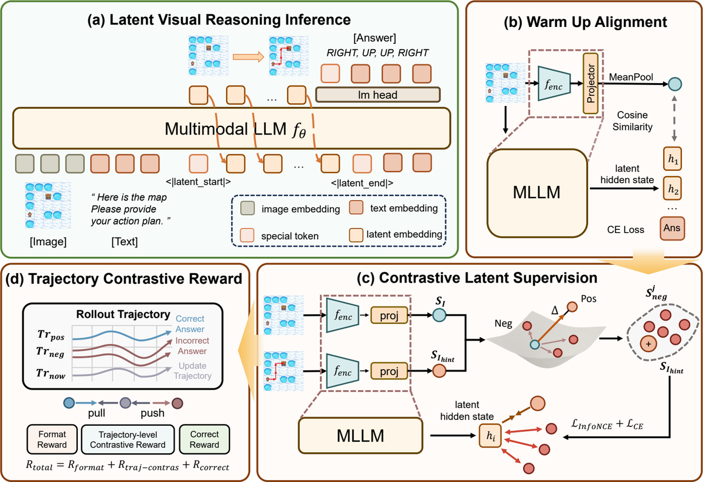
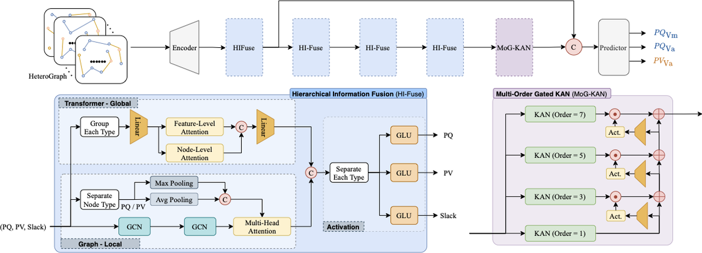
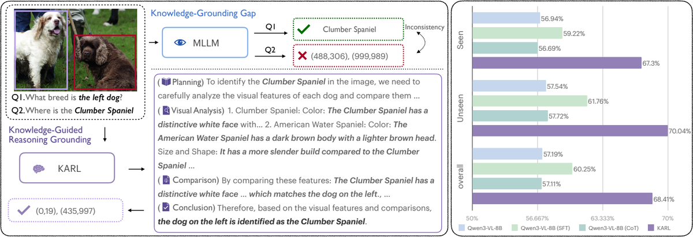
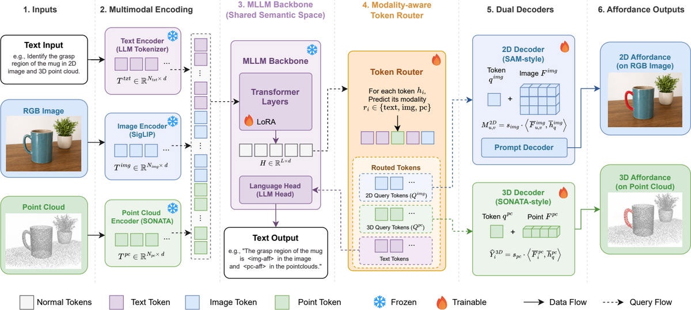
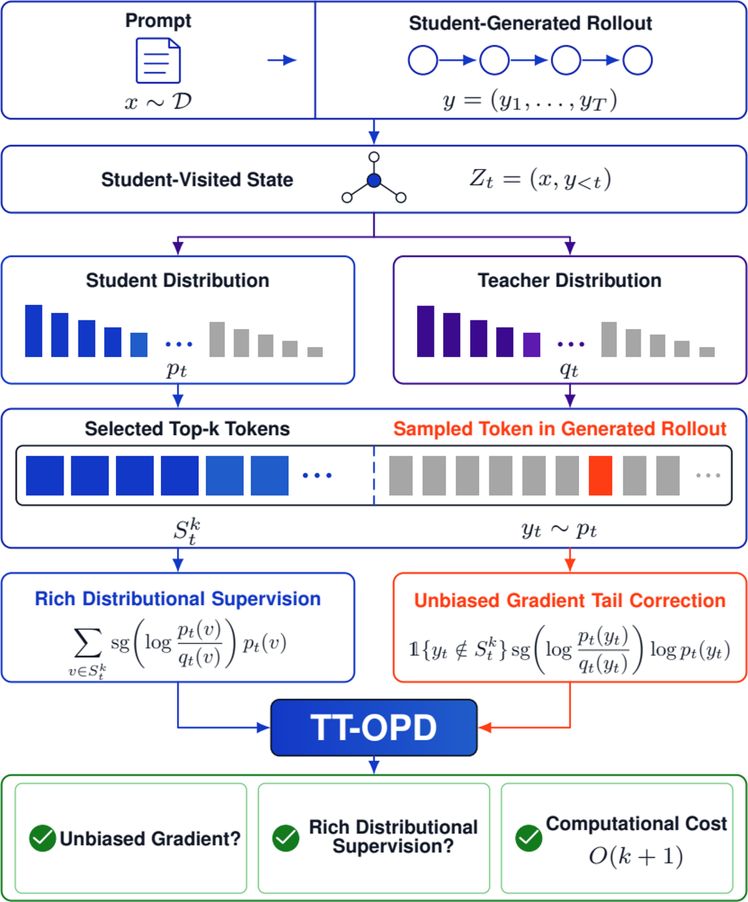

I am Ziyang Ding, a Ph.D. student at Shanghai Jiao Tong University in a joint training program with Shanghai AI Laboratory. I am jointly advised by Zhen Zhao at Shanghai AI Laboratory and Yichao Yan at Shanghai Jiao Tong University. I received my bachelor’s degree in Statistics from Shandong University in 2026.
My research focuses on reasoning and decision-making in multimodal large language models. I am interested in developing models that connect visual understanding with structured reasoning and informed decisions. Through my research, I aim to advance the capabilities of multimodal intelligent systems.
I welcome opportunities for research discussions and collaboration. Please feel free to contact me.
Newest first in each group. Google Scholar · * Equal contribution.
Click any figure to view it in full.

NeurIPS 2026
CIKM 2026
arXiv 2026
arXiv 2026
arXiv 2026Powered by Jekyll and Minimal Light theme.